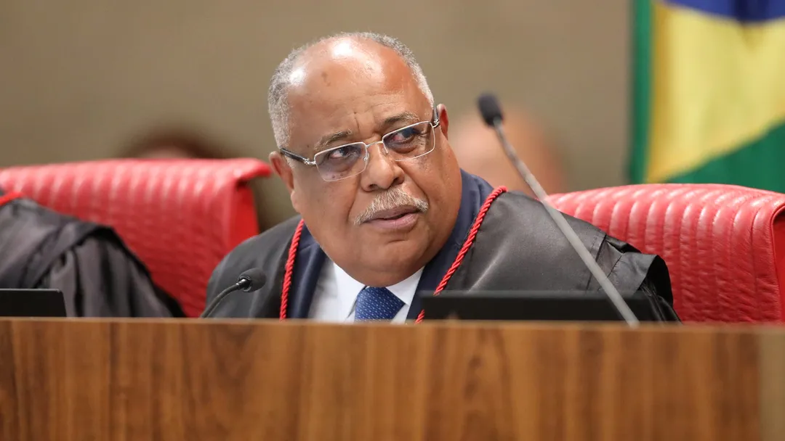

Confira os principais aspectos do voto do relator no julgamento de Bolsonaro no TSE.
O Ministro Benedito Gonçalves se posicionou pela inelegibilidade do ex-presidente. Como relator e primeiro a votar, ele destacou a necessidade de não fechar os olhos para discursos de ódio e mentiras.
O julgamento da ação que pode resultar na inelegibilidade do ex-presidente Jair Bolsonaro foi retomado pelo Tribunal Superior Eleitoral (TSE) na noite desta terça-feira (27).
Bolsonaro está sendo acusado de abuso de poder político e uso indevido dos meios de comunicação devido a uma reunião que ocorreu em julho do ano passado, no Palácio da Alvorada, com embaixadores estrangeiros. Durante a reunião, Bolsonaro difamou as urnas eletrônicas e o sistema eleitoral brasileiro, sem apresentar provas. O encontro foi transmitido pelo canal oficial de TV do governo.
Na sessão de hoje, o relator da ação, ministro Benedito Gonçalves, apresentou seu voto. Ele votou a favor da inelegibilidade de Bolsonaro. O voto de Gonçalves possui cerca de 300 páginas, mas ele optou por ler um resumo dos principais pontos.
O relator destacou a importância de não ignorar os efeitos antidemocráticos de discursos violentos e mentirosos, que colocam em dúvida a credibilidade da Justiça Eleitoral. Ele rebateu os argumentos da defesa, que tentou descaracterizar a natureza eleitoral da reunião, afirmando que toda comunicação é pragmática e busca influenciar o meio.
Gonçalves também afirmou que Bolsonaro obteve vantagem eleitoral com a reunião, que ocorreu antes do início da propaganda eleitoral e permitiu a projeção midiática de temas explorados continuamente durante a campanha, conferindo uma vantagem indevida.
O relator ressaltou que é papel do presidente da República zelar pelo livre exercício dos poderes constituídos e pela segurança interna. Ele afirmou que Bolsonaro violou ostensivamente esses deveres, comprometendo a normalidade democrática e a isonomia.
Gonçalves destacou que as declarações de Bolsonaro resultaram em um acirramento das tensões, influenciaram o eleitorado, mobilizaram sentimentos negativos e instigaram a crença infundada de que haveria uma ameaça de adulteração dos resultados eleitorais em 2022.
O relator também mencionou a banalização do golpismo, representada pela minuta golpista de intervenção no TSE encontrada na residência do ex-ministro da Justiça. Ele afirmou que Bolsonaro é responsável por essa banalização e pelos efeitos pragmáticos da mensagem que deliberadamente difundiu.
Gonçalves concluiu que Bolsonaro preparou o material da apresentação aos embaixadores sem a participação dos ministérios, sendo integralmente responsável por seu conteúdo. Ele ressaltou os danos causados pelas informações falsas divulgadas por Bolsonaro, que vulnerabilizaram os bens jurídicos eleitorais e favoreceram sua candidatura.
O relator também destacou a forma inadequada como Bolsonaro fez referência às Forças Armadas, mostrando um descaso com a conquista democrática e uma interpretação distorcida de suas funções.
Gonçalves considerou válida como prova a minuta do golpe encontrada na casa de Anderson Torres, ex-ministro de Bolsonaro, afirmando que ela representa o golpismo em sua essência.
O julgamento ainda está em andamento, e outros ministros do TSE devem apresentar seus votos. O resultado final e suas consequências eleitorais ainda estão por ser determinados.